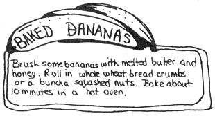

Out Of The Molasses Jug
November/December 1972
Bean Soop
This Bean Soop is
Rich, High in Protein
Cheap, Meatless, and Made in 1 Hour
Take:
1 cup dried split peas
1 cup lentils
1 cup baby limas
1 cup blackeyed peas
1 cloved garlic chopped... fine
Cover with plenty of salted water & boil 45 minutes.
While beans are boiling Dice:
1 large potato
1 large white onion
2 stalks celery
3 carrots
After the beans have boiled 45 min. Add vegetables, also soy sauce, and/or Teriyaki sauce to taste. Bring back to Boil. Boil for 10 minutes.
Play around with it!
Match Scratches on Walls Some menfolk are careless in scratching matches at any handy place to light their pipes or cigar (or joints) To keep your walls or mantle pieces from being marked up, take a piece of 4" x 6" sand paper, frame it neatly, and hang it to the wall in a handy place.
CANDLE CARE
Candles improve by keeping a few months. The most economical as well as the most convenient plan is to purchase them by the box,
IF WAX CANDLES BECOME DISCOLORED OR SOILED, they may be restored by rubbing them with a clean flannel slightly dipped in alcohol.
CANDLES ARE OFTEN DIFFICULT TO LIGHT. they will however, ignite instantly if, when preparing them for evening, you dip the wicks in alcohol shortly before they are wanted.
ALWAYS LIGHT A CANDLE WITH A MATCH and do not hold it to the fire as that will cause the top to melt. Always hold the match to the side of the wick.
IF YOU FIND THE CANDLE TOO SMALL for your candlestick, just wrap a small piece of white paper around the bottom of the candle, but do not allow the paper to appear above the socket.
ALWAYS REMEMBER THAT A CANDLE BURNS AS IT IS LIT. Therefore always trim a wick to a convenient length for lightning, which means that it should be trimmed close. If the wick is too long, it will have a tendency to drop over and set the candle to running.
CANDLES LOOK & BURN BETTER IF YOU VARNISH THEM WITH SHELLAC.
GLASS RECEIVERS for the droppings of candles are very convenient as well as ornamental. THE PIECES of CANDLE THAT are left each morning should be placed in a tin box. Kept for that purpose against emergencies and other uses.
Original recipe submitted by Nancy Kirk (Seattle)
1 slice Wheat Berry bread (or other whole wheat bread)
1 T. Chia seeds
Several thin slices of a light cheese (Monterey Jack is good)
Several chopped walnuts
Toast cheese and bread, remove and place nuts and seeds firmly in cheese. This sandwich is high in protein and B vitamins, thus yielding god energy. Milk is an excellent beverage with this.
CHINESE STYLE SPROUTS
Heat some sesame oil in a large skillet, saute some green onions for a minute or 2 then throw in fresh bean sprouts and stir fry (quickly with super-hot heat) for just a minute. Sprinkle with sesame seeds if you wish, or 1/2 t. of fresh ground ginger. Good vitamin-rich, nutritional dish!
Cindy Roberts

This double page taken from NORTHWEST PASSAGE, a fortnightly journal of ecology, politics, the arts and good healthy livin.' We've recommended NP before and we're doing it again. Get yers for $6.00 ($6.75 Canadian, $7.50 foreign) from 1000 Harris St., Bellingham, Wash. 98225.
Ice cream is one of the quickest and easiest of all desserts to make outdoors, esp. after a fresh snow. Best for the purpose are dry snow flakes. You can also use the granular interior of the perpetual snowbanks found in the higher mountains, although the results will be more a course sherbet.
Just empty a can of evaporated milk into a large pot or bowl. A similar amt of dry milk, reconstituted with water will do as well. Add 2 tablespoons of sugar (by which we know he means raw sugar or honey) 1/8 teaspoon salt, and some flavoring. Vanilla, or one of the other extracts will serve. so will cocoa, powdered instant coffee, with 1 tsp chocolate: enough, incidentally for 1 quart of ice cream. If the flavoring is for instance chocolate syrup, which is already sweet, just omit sugar (but not the honey, nuts, seeds berries, fruit, or whatever else grows wild or can be liberated locally.)
Then quickly stir in fresh snow to taste. More sweetening and flavoring may be added if you want. For this reason it's safest to go light ((always)) on these intially. Otherwise you'll have to repair any mistake with more snow and milk-not that that isn't a good excuse-Vanilla, rich dark chocolate with overtones of pepper mint extract, and banana (extract) ice cream are all extra-scrumptious.
The esquimoux have been delighting esquimoux children (their favorite pasttime) since longer that anyone can remember by chopping up (fish, mammal, or, why not soy oil) with the snow and sweet berries. REAL ice cream.
Lew Hailey
Palo Alto, Calif.
ACHES AND PAINS
FROM A FELLER RAISED IN NORTHERN IDAHO, HERE'S A SUREFIRE CURE FOR SORE MUSCLES:
MIX TOGETHER:
1 pint rubbing alcohol
1 or 1 1/2 oil of wintergreen
10 or 12 aspirin
Dont rub any longer than necessary, cause the longer you rub, the hotter and hotter it gets. Good for aches and pains & arthritis (He says)
FROZEN PIPES?... DON'T PANIC
To clear a frozen drainpipe-if it is not safe to build a small fire on the ground near the frozen pipe, sprinkle quicklime on the ground, moisten it, and cover, The heat generated by the lime does the trick
|
|
|
 |
|
|
|
|